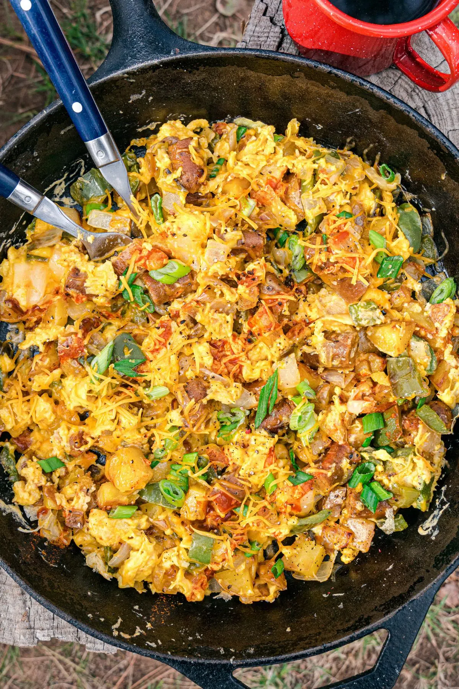

Breakfast Skillet

Description
Start your day off right with a sizzling and satisfying
breakfast skillet
cooked over a crackling campfire. Our mouthwatering breakfast skillet
combines the comforting flavors of breakfast sausage, golden potatoes, and
farm-fresh eggs, all cooked to perfection in a cast iron skillet. As the
aroma fills the air and the sun begins to rise, you'll find yourself drawn
to the irresistible combination of sausage, tender potatoes, and the
creamy richness of perfectly cooked eggs. This campfire breakfast skillet
is the ultimate way to fuel your outdoor adventures, providing a hearty
and delicious start to your day. So gather around the fire, feel the
warmth on your face, and dive into a plateful of campfire breakfast bliss.
Let the flavors of the wilderness awaken your senses and set the stage for
a day full of exploration and delight.
Ingredients
- 1 tablespoon of oil
- 1/4 pound Yukon gold potatoes, cut into 1/4" to 1/2" cubes
- 1/2 green bell pepper, diced
- 1/4 teaspoon sea salt
- 6 links of sausage
- 3 eggs
- 1/2 cup shredded cheddar cheese
- Chopped green onions, ground black pepper, hot sauce to serve
Steps
-
Heat a large skillet over medium heat and add 1/2 tablespoon of oil. Add
the potatoes and cook, turning them occasionally, until they begin to
brown, about 10-15 minutes.
-
Add another 1/2 tablespoon of oil and the green bell pepper. Saute for 5
minutes until beginning to soften, then add the onion and salt. Saute
for about 5 minutes, until the onion is soft and beginning to take on
color. Add the sausage and cook until browned.
-
Thoroughly beat the eggs in a bowl. Once all the vegetables are soft and
browned, lower the heat and push them to the sides of the pan. Add a bit
of oil to the center of the pan, then add the eggs and the shredded
cheese to the skillet. Use your spatula to scramble the eggs until they
set. Then, fold the vegetables back into the mix.
-
Remove from the heat and top with sliced green onions, cracked pepper,
and hot sauce (optional).
Back to Homepage